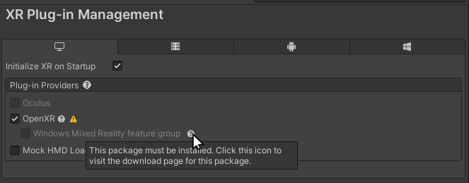
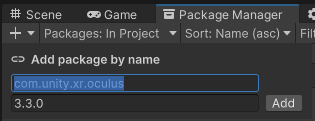

The Unity packages that support XR development fall into two broad categories:
The Unity XR plug-in framework provides the basis for XR development in Unity. You can add support for an XR device to a project by installing and enabling the relevant XR plug-in. You can add or remove plug-ins to the project at any time.
See XR Project set up for instructions on how to add XR plug-ins to your project using the XR Plug-in Management system.
Unity supports the following XR plug-ins:
| Plug-in | Supported devices |
|---|---|
| Apple ARKit | iOS devices |
| Google ARCore | Handheld Android devices |
| Magic Leap | Magic Leap 2 |
| Microsoft HoloLens | HoloLens, HoloLens 2 |
| Microsoft Windows Mixed Reality | Microsoft supported package for HoloLens and Windows Mixed Reality headsets (various manufacturers). Note: In Unity 2021+. use the OpenXR provider plug-in for Windows Mixed Reality. The previous WMR provider package is not supported beyond Unity 2020.3. Refer to Windows Mixed Reality support for more information. |
| Oculus | Oculus Rift, Meta Quest 2, Quest Pro |
| OpenXR | Any device with an OpenXR runtime, including Meta headsets, Vive headsets, Valve SteamVR, HoloLens, Windows Mixed Reality, and others. |
| PlayStation VR (available to registered PlayStation developers) | Sony PS VR and PS VR2 devices. See PlayStation Partners for more information. |
Refer to XR Platform System Requirements for system requirements for developing XR projects in Unity.
注意：
Unity’s XR packages build on the XR plug-in framework to add additional application-level features and developer tools.
The XR packages include:
| Package | 描述 |
|---|---|
| XR Plug-in Management | Adds Project Settings for managing the platforms and plug-ins used by a Unity XR project. See Project setup for information about managing XR plug-ins. |
| AR Foundation | Provides cross-platform AR features, such as plane detection, meshing, and object tracking. Required for developing AR applications with the Unity XR packages. |
| XR Interaction Toolkit | Provides interaction components for adding controller-based interaction and manipulation, UI interaction, and movement. Supports VR, MR, and AR. |
| XR Hands | Provides an interface for accessing hand tracking data in an XR application. You must also use a provider plug-in that has been updated to support hand tracking, such as OpenXR version 1.7. |
| Unity Mars | Provides components and tools for adapting AR content to the user’s surroundings. For example, it supplies a standard way of querying the environment to find suitable locations for adding your digital content to the scene. Requires a license that includes Unity Mars. See Unity Mars for information about license requirements. |
| XR Core Utilities | Contains software utilities used by other XR plug-ins and packages. Typically installed in your project as a dependency of other XR packages. |
| XR Legacy Input Helpers | Contains software utilities related to XR input. This package is being phased out, but is still installed as a dependency by some XR packages. |
Note: If you use the AR Foundation package in a project, the version numbers of AR Foundation, ARCore, and ARKit must all match. In other words, if you are using version 4.2 of the AR Foundation package, you must also use version 4.2 of the ARCore and ARKit packages.
The following information describes the changes to XR packages in Unity 2022.3:
Developing for the Magic Leap 1 is not supported after Unity 2020.3.
| Unity version | Package version | Device model |
|---|---|---|
| Unity 2019.4–2020.3 | com.unity.xr.magicleap@6.4 | Magic Leap 1 |
| Unity 2021.1–2022.1 | No version supported. | 无 |
| Unity 2022.2+ | com.unity.xr.magicleap@7.0 | Magic Leap 2 |
Use the OpenXR provider plug-in to develop for Windows Mixed Reality devices.
To configure the OpenXR provider plug-in for Windows MR:
In the Unity Editor, open Edit > Project Settings
Select the XR Plug-in Management category.
Choose the Windows, Mac, Linux tab.
In the Plug-in Providers list, enable OpenXR.
The OpenXR package installs, if necessary.
Click the Help icon next to the Windows Mixed Reality feature group option to open the Microsoft Mixed Reality OpenXR Plugin setup instructions.

Follow the the instructions to install the Microsoft Mixed Reality OpenXR plug-in. (The Microsoft Mixed Reality Feature Tool program lists the plug-in under its Platform Support category.)
Enable the Windows Mixed Reality feature group.
After you have installed the plug-in, review the OpenXR settings under XR Plug-in Management.
Meta has dropped support for the Quest 1 device as of version 51.0 of their Platform SDK. The Platform SDK is included in version 51.0 of the Oculus Integration package on the Unity Asset Store. To continue developing for the Quest 1, you must use version 50 or earlier of the Oculus Integration package. If needed, you can download this version from the Meta Quest downloads page: https://developer.oculus.com/downloads/package/unity-integration/50.0.
In addition, version 4+ of the Oculus provider plug-in package no longer supports Quest 1 development. You must use an earlier version of the Oculus provider plug-in to continue developing for the Quest 1. Because Oculus 4.0 is the verified package version on Unity 2022.3, you must downgrade to the lower package version.
To install version 3.3.0 of the Oculus package:
Open your project in the Unity Editor.
Click Oculus XR plug-in version 3.3.0.

The Editor Package Manager window opens, showing the Add package by name dialog
Click Add to install the last compatible version of the plugin.
Alternately, you can open the Add package by name dialog manually and enter the package id and version. You can also edit the project’s package manifest file directly to reference the required package version:
"com.unity.xr.oculus": "3.3.0"